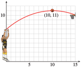

Section 4.2 The Vertex
Subsection Finding the Vertex
In Section 3.3 we saw that the vertex of the graph of \(~y=ax^2+bx~\)has \(x\)-coordinate given by
Now we'll see that the same formula holds for any parabola. Use your calculator to graph the two parabolas
in the window
The graphs are shown at right. Now compare the two graphs. You should notice that:
- The second graph is identical to the first, except shifted upward by 6 units.
- For both graphs, the \(x\)-coordinate of the vertex is \(x_v=-2\text{.}\)
We see that the \(x\)-coordinate of the vertex is not affected by an upward shift. The formula for the \(x\)-coordinate of the vertex still holds.
Vertex of a Parabola.
For the graph of \(~~y=ax^2+bx+c=0,~~\) the \(x\)-coordinate of the vertex is
Example 4.17.
Find the vertex of the graph of \(f(x) = -2x^2 + x + 1\text{.}\)
For this function, \(a = -2\text{,}\) \(b = 1\text{,}\) and \(c = 1\text{.}\) The \(x\)-coordinate of the vertex is given by
To find the \(y\)-coordinate of the vertex, we substitute \(x = \alert{\dfrac{1}{4}}\) into the equation. We can do this by hand to find
So the coordinates of the vertex are \(\left(\dfrac{1}{4},\dfrac{9}{8}\right)\text{.}\) Alternatively, we can use the calculator to evaluate \(-2x^2 + x + 1\) for \(x = 0.25\text{.}\) We enter
and press \(~\boxed{\text{ENTER}}.~\) The calculator returns the \(y\)-value \(1.125\text{.}\) Thus, the vertex is the point \((0.25, 1.125)\text{,}\) which is the decimal equivalent of \(\left(\dfrac{1}{4},\dfrac{9}{8}\right)\text{.}\)
Notebook 4.18. Practice 1.
Once we know the vertex of a parabola, we can make a quick sketch of the graph.
Example 4.19.
Sketch a graph of \(~y=x^2+3x+1\)
The vertex of the graph is given by
The vertex is the point \((-1.5,-1.25)\text{.}\)
We set \(x=0\) to find the \(y\)-intercept, \((0,1)\text{.}\) Now, the axis of symmetry of the parabola is the vertical line that passes through its vertex. That line is \(x=-1.5\text{,}\) so the \(y\)-intercept lies 1.5 units to the right of the axis. There must be another point on the parabola with the same \(y\)-coordinate as the intercept but 1.5 units to the left of the axis. This point is \((-3,1)\text{.}\)
By plotting the vertex, the \(y\)-intercept, and its symmetric point, we can make a quick sketch of the parabola, as shown below.
If we need more accuracy in our graph, we can find and plot more points, including the \(x\)-intercepts.
Notebook 4.20. Practice 2.
Subsection Maximum or Minimum Values
Many quadratic models arise as the product of two variables, one of which increases while the other decreases. For example, in the Investigation for Chapter 3 we looked at the areas of different rectangles with the same perimeter. The area of a rectangle is the product of its length and its width, or \(A=lw\text{.}\) If we require that the rectangle have a certain perimeter, then as we increase its length, we must also decrease its width.
Another example is the formula for the revenue from sales of an item:
Usually, when the price of an item increases, the number of items sold decreases.
Finding the maximum or minimum value for a variable expression is a common problem in applications. For example, if you own a company that manufactures blue jeans, you might like to know how much to charge for your jeans in order to maximize your revenue. As you increase the price of the jeans, your revenue may increase for a while. But if you charge too much for the jeans, consumers will not buy as many pairs, and your revenue may actually start to decrease. Is there some optimum price you should charge for a pair of jeans in order to achieve the greatest revenue?
Example 4.21.
Late Nite Blues finds that it can sell \(600 - 15x\) pairs of jeans per week if it charges \(x\) dollars per pair. (Notice that as the price increases, the number of pairs of jeans sold decreases.)
Write an equation for the revenue as a function of the price of a pair of jeans.
Graph the function.
How much should Late Nite Blues charge for a pair of jeans in order to maximize its revenue?
-
Using the formula for revenue stated above, we find
\begin{align*} \text{Revenue} \amp= (\text{price of one item})(\text{number of items sold})\\ R \amp = x(600 - 15x)\\ R \amp = 600x - 15x^2 \end{align*} -
We recognize the equation as quadratic, so the graph is a parabola. You can use your calculator to verify the graph below.

-
As you can see from the graph, the maximum value of \(R\) occurs at the vertex of the parabola. Thus,
\begin{align*} x_v\amp=\frac{-b}{2a}=\frac{-600}{2(-15)}=20\\ y_v\amp=600(\alert{20}) - 15(\alert{20})^2 = 6000 \end{align*}The revenue takes on its maximum value when \(x = 20\text{,}\) and the maximum value is \(R = 6000\text{.}\) This means that Late Nite Blues should charge $20 for a pair of jeans in order to maximize revenue at $6000 a week.
Note 4.22.
If the equation relating two variables is quadratic, then the maximum or minimum value is easy to find: It is the value at the vertex. If the parabola opens downward, as in Example 4.21, there is a maximum value at the vertex. If the parabola opens upward, there is a minimum value at the vertex.
Notebook 4.23. QuickCheck 1.
Notebook 4.24. Practice 3.
Subsection The Vertex Form for a Parabola
Consider the quadratic equation
By expanding the squared expression and collecting like terms, we can rewrite the equation in standard form as
The vertex of this parabola is
and its graph is shown below.

Notice that the coordinates of the vertex, \((3,-8)\text{,}\) are apparent in the original equation; we don’t need to do any computation to find the vertex.
This equation is an example of the vertex form for a quadratic function.
Vertex Form for a Quadratic Equation.
A quadratic equation \(~y=ax^2+bx+c,~a \not=0,~\) can be written in the vertex form
where the vertex of the graph is \(~(x_v,y_v)\text{.}\)
Example 4.25.
Find the vertex of the graph of \(y = -3(x - 4)^2 + 6\text{.}\) Is the vertex a maximum or a minimum point of the graph?
We compare the equation to the vertex form to see that the coordinates of the vertex are \((4, 6)\text{.}\) For this equation, \(a = -3 \lt 0\text{,}\) so the parabola opens downward. The vertex is the maximum point of the graph.
To understand why the vertex form works, substitute \(x_v = \alert{4}\) into \(y = -3(x - 4)^2 + 6\) from Example 4.25 to find
which confirms that when \(x = 4\text{,}\) \(y = 6\text{.}\) Next, notice that if \(x\) is any number except \(4\text{,}\) the expression \(-3(x - 4)^2\) is negative, so \(y \lt 6\text{.}\) Therefore, \(6\) is the maximum value for \(y\) on the graph, so \((4, 6)\) is the high point or vertex.
You can also rewrite \(y = -3(x - 4)^2 + 6\) in standard form and use the formula \(x_v = \dfrac{-b}{2a}\) to confirm that the vertex is the point \((4, 6)\text{.}\)
Notebook 4.26. QuickCheck 2.
Notebook 4.27. Practice 4.
Any quadratic equation in vertex form can be written in standard form by expanding, and any quadratic equation in standard form can be put into vertex form by completing the square.
Example 4.28.
Write the equation \(y = 3x^2 - 6x - 1\) in vertex form and find the vertex of its graph.
We factor the lead coefficient, \(3\text{,}\) from the variable terms, leaving a space to complete the square.
Next, we complete the square inside parentheses. Take half the coefficient of \(x\) and square the result:
We must add \(1\) to complete the square. However, we are really adding \(3(1)\) to the right side of the equation, so we must also subtract \(3\) to compensate:
The expression inside parentheses is now a perfect square, and the vertex form is
The vertex of the parabola is \((1,-4)\text{.}\)
Notebook 4.29. Practice 5.
Subsection Using the Vertex Form
If we know the vertex of a parabola and one other point, we can use the vertex form to find its equation.
Example 4.30.
When Andre practices free-throws at the park, the ball leaves his hands at a height of 7 feet, and reaches the vertex of its trajectory 10 feet away at a height of 11 feet.
- Find a quadratic equation for the ball's trajectory.
- Do you think Andre's free-throw would score on a regulation basketball court, where the hoop is 15 feet from the shooter and 10 feet high?
-
If Andre's feet are at the origin, then the vertex of the ball's trajectory is the point \((\alert{10},\alert{11})\text{,}\) and its \(y\)-intercept is \((0,7)\text{.}\) We start with the vertex form for a parabola.
\begin{align*} y \amp =a(x-x_v)^2+y_v\\ y \amp =a(x-\alert{10})^2+\alert{11} \end{align*}We use the point \((0,7)\) to find the value of \(a\text{.}\)
\begin{align*} \alert{7} \amp = a(\alert{0}-10)^2+11\\ 7 \amp= 100a+11\\ a \amp = -0.04 \end{align*}The equation of the trajectory is \(~y=-0.04(x-10)^2+11\text{.}\)
 -
We'd like to know if the point \((15,10)\) is on the trajectory of Andre's free-throw. We substitute \(x=\alert{15}\) into the equation.
\begin{align*} y \amp =-0.04(\alert{15}-10)^2+11\\ y \amp =-0.04(25)+11 = 10 \end{align*}From our computations, we see that the point \((15,10)\) is indeed on the trajectory. However, because Andre's shot will probably hit the backboard just where the hoop attaches and bounce off, so it is unlikely that his shot will score.
Notebook 4.31. QuickCheck 3.
Notebook 4.32. Practice 6.
Exercises Problem Set 4.2
Warm Up
1.
Francine throws a wrench into the air from the bottom of a trench 12 feet deep. Its height \(t\) seconds later is given in feet by
-
Complete the table of values.
\(t\) \(0\) \(0.25\) \(0.5\) \(0.75\) \(1\) \(0.25\) \(1.5\) \(h\) \(\) \(\) \(\) \(\) \(\) \(\) \(\) - Graph the equation.
- Find the vertex of the graph.
- What does the \(h\)-coordinate of the vertex tell us about the wrench?
- What does the \(t\)-coordinate of the vertex tell us about the wrench?
2.
Write an equation for a parabola that has \(x\)-intercepts at \((2,0)\) and \((-3,0)\text{.}\)
Write an equation for another parabola that has the same \(x\)-intercepts.
3.
Write an equation for a parabola that opens upward with \(x\)-intercepts \((-1,0)\) and \((4,0)\text{.}\)
Write an equation for a parabola that opens downward with \(x\)-intercepts \((-1,0)\) and \((4,0)\text{.}\)
4.
- The math club has $68 in the treasury. Annual dues are $4. If \(x\) more students join, write an expression for the amount of money in the treasury.
- The monthly dues for Rafael's condo association are $120. However, for each new tenant who moves in, the dues will be reduced by $5. Write an expression for the dues if \(x\) new tenants move in.
Skills Practice
For Problems 5 and 6:
- Find the vertex of the parabola.
- Sketch the graph.
5.
\(y=x^2+4x+7\)6.
\(y=x^2-6x+10\)For Problems 7 and 8, sketch a graph of the parabola. What is the vertex of each graph?
7.
- \(\displaystyle y=(x-3)^2\)
- \(\displaystyle y=-(x-3)^2\)
- \(\displaystyle y=-(x-3)^2+4\)
8.
- \(\displaystyle y=(x+4)^2\)
- \(\displaystyle y=\dfrac{1}{2}(x+4)^2\)
- \(\displaystyle y=3+\dfrac{1}{2}(x+4)^2\)
For Problems 9 and 10:
- Find the vertex of the parabola.
- Sketch the graph.
- Write the equation in standard form.
9.
\(y=2(x-3)^2+4\)10.
\(y=-\dfrac{1}{2}(x+4)^2-3\)11.
- Write an equation for a parabola whose vertex is the point \((-2,6)\text{.}\) (Many answers are possible.)
- Find the value of \(a\) if the \(y\)-intercept of the parabola in part (a) is 18.
12.
- Write an equation for a parabola with vertex at \((0,-3)\) and one \(x\)-intercept at \((2,0)\text{.}\)
- Write an equation for a parabola with vertex at \((0,-3)\) and no \(x\)-intercepts.
For Problems 13 and 14, write the equation in the form \(~a(x-p)^2+q~\) by completing the square.
13.
\(y=3x^2+6x-2\)14.
\(y=-2x^2-8x+3\)For Problems 15 and 16, match each equation with one of the eight graphs shown.
15.
- \(\displaystyle y=1-x^2\)
- \(\displaystyle y=(x+2)^2\)
- \(\displaystyle y=2x^2\)
- \(\displaystyle y=(x-4)(x+2)\)
16.
- \(\displaystyle y=-2-(x-2)^2\)
- \(\displaystyle y=x-x^2\)
- \(\displaystyle y=x^2-4\)
- \(\displaystyle y=-0.5x^2\)
Applications
17.
Gavin has rented space for a booth at the county fair. As part of his display, he wants to rope off a rectangular area with 80 yards of rope.
- Let \(w\) represent the width of the roped-off rectangle, and write an expression for its length. Then write an expression in terms of \(w\) for the area \(A\) of the roped-off space.
- What is the largest area that Gavin can rope off? What will the dimensions of the rectangle be?
18.
A breeder of horses wants to fence two adjacent rectangular grazing areas along a river with 600 meters of fence.
- Write an expression for the total area, \(A\text{,}\) of the grazing land in terms of the width, \(w\text{,}\) of the rectangles.
- What is the largest area she can enclose?
19.
The owner of a motel has 60 rooms to rent. She finds that if she charges $20 per room per night, all the rooms will be rented. For every $2 that she increases the price of a room, three rooms will stand vacant.
-
Complete the table. The first two rows are filled in for you.
No. of price increases Price of a room No. of rooms rented Total revenue \(0\) \(20\) \(60\) \(1200\) \(1\) \(22\) \(57\) \(1254\) \(2\) \(\) \(\) \(\) \(3\) \(\) \(\) \(\) \(4\) \(\) \(\) \(\) \(5\) \(\) \(\) \(\) \(6\) \(\) \(\) \(\) \(7\) \(\) \(\) \(\) \(8\) \(\) \(\) \(\) \(9\) \(\) \(\) \(\) \(10\) \(\) \(\) \(\) \(11\) \(\) \(\) \(\) \(12\) \(\) \(\) \(\) \(13\) \(\) \(\) \(\) \(14\) \(\) \(\) \(\) \(15\) \(\) \(\) \(\) \(16\) \(\) \(\) \(\) \(17\) \(\) \(\) \(\) \(18\) \(\) \(\) \(\) \(19\) \(\) \(\) \(\) \(20\) \(\) \(\) \(\) - Let stand for the number of $2 price increases the owner makes. Write algebraic expressions for the price of a room, the number of rooms that will be rented, and the total revenue earned at that price.
- Use your calculator to make a table of values for your algebraic expressions. Let \(Y_1\) stand for the price of a room, \(Y_2\) for the number of rooms rented, and \(Y_3\) for the total revenue. Verify the values you calculated in part (a).
- Use your table to find a value of \(x\) that causes the total revenue to be zero.
- Use your graphing calculator to graph your formula for total revenue.
- What is the lowest price that the owner can charge for a room if she wants her revenue to exceed $1296 per night? What is the highest price she can charge to obtain this revenue?
- What is the maximum revenue the owner can earn in one night? How much should she charge for a room to maximize her revenue? How many rooms will she rent at that price?
20.
A travel agent offers a group rate of $2400 per person for a week in London if 16 people sign up for the tour. For each additional person who signs up, the price per person is reduced by $100.
- Let \(x\) represent the number of additional people who sign up. Write expressions for the number of people signed up, the price per person, and the total revenue.
- How many people must sign up for the tour in order for the travel agent to maximize her revenue?
21.
In skeet shooting, the clay pigeon is launched from a height of 4 feet and reaches a maximum height of 164 feet at a distance of 80 feet from the launch site.
- Write an equation for the height of the clay pigeon in terms of the horizontal distance it has traveled.
- If the shooter misses the clay pigeon, how far from the launch site will it hit the ground?
22.
The batter in a softball game hits the ball when it is 4 feet above the ground. The ball reaches the greatest height on its trajectory, 35 feet, directly above the head of the left-fielder, who is 200 feet from home plate.
- Write an equation for the height of the softball in terms of its horizontal distance from home plate.
- Will the ball clear the left-field wall, which is 10 feet tall and 375 feet from home plate?
23.
The rate at which an antigen precipitates during an antigen–antibody reaction depends on the amount of antigen present. For a fixed quantity of antibody, the time required for a particular antigen to precipitate is given in minutes by
where \(w\) is the quantity of antigen present, in grams. For what quantity of antigen will the reaction proceed most rapidly, and how long will the precipitation take?
24.
- Graph in the standard window two lines and a parabola:\begin{align*} Y_1 \amp = x+2\\ Y_2 \amp = 4-x\\ Y_3 \amp = (x+2)(4-x) \end{align*}
- What do you notice about the \(x\)-intercepts of the graphs?
- What do you notice about the vertex of the parabola and the intersection point of the two lines?
25.
- Graph in the standard window two lines and a parabola:\begin{align*} Y_1 \amp = x+4\\ Y_2 \amp = x-2\\ Y_3 \amp = (x+4)(x-2) \end{align*}
- What are the \(x\)-intercepts of the parabola?
By referring to your graph, complete the table showing whether the \(y\)-values are positive or negative in each region.
\(~~~~\) \(x \lt -4\) \(-4 \lt x \lt 2\) \(x \gt 2\) \(Y_1\) \(\) \(\) \(\) \(Y_2\) \(\) \(\) \(\) \(Y_3\) \(\) \(\) \(\)